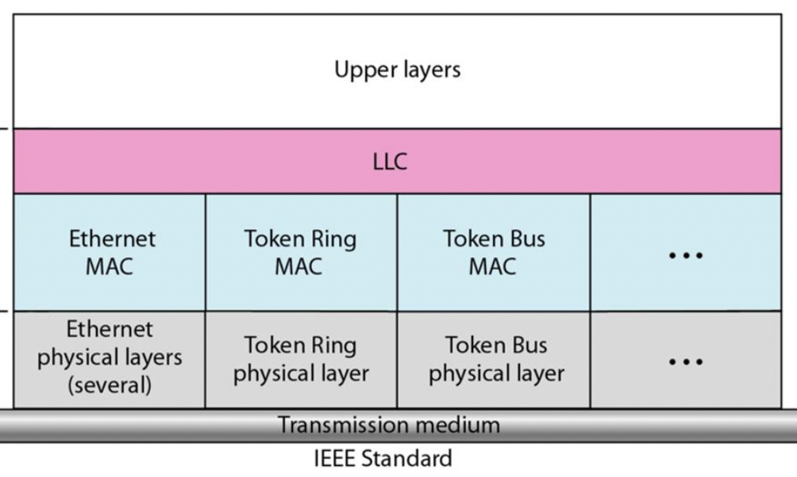
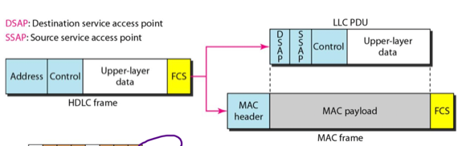
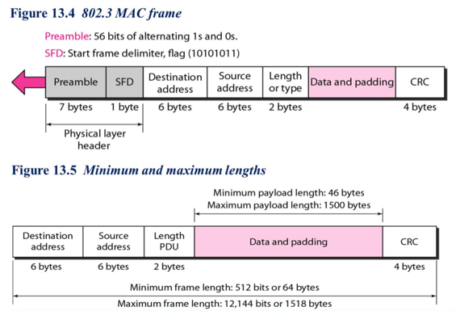
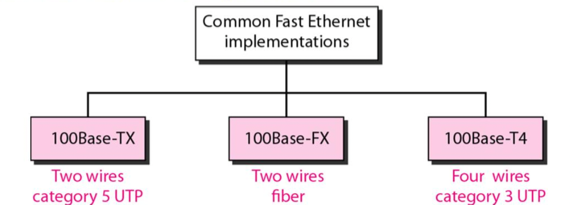
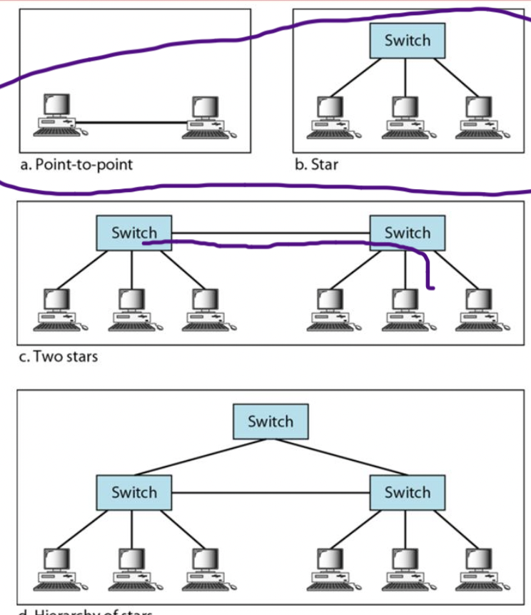
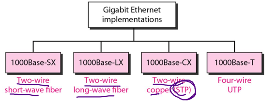

충남대학교 컴퓨터공학과 김상하 교수님의 "데이터 통신" 강의를 필기한 내용입니다.
다소 잘못된 내용과 구어적 표현 이 포함되어 있을 수 있습니다.
IEEE 802 Standards
- IEEE 802 표준 : LAN환경에서의 물리계층과 데이터 링크 계층의 여러 함수들을 표준화 함
- LAN이라는 것은 Local Area Network즉, 단거리 지역통신망을 뜻한다
- 얘는 OSI나 인터넷 모델과는 관련이 없는 표준이다
Data Link Layer, Physical Layer

- 데이터 링크 계층은
- 하나의 LLC(에러 잡는 기능 - 앞에서의 Data Link Control과 동일)
- 여러개의 MAC으로 구성된다
- IP같은 상위 계층 프로토콜은 이 LLC의 서비스를 이용하지 않는다 - IP는 오류에 그렇게 민감하지 않댄다
- 그리고 MAC에는 Ethernet이나 Token ring, Token bus들의 여러 프로토콜이 존재하며 각각의 프로토콜에 대한 Physical Layer가 개별로 존재한다
Data Link Layer Header
- HDLC의 헤더가 IEEE 802에서는 어떻게 구현되는지 함 봐라

- 일단 HDLC의 ADDRESS는 DSAP와 SSAP의 이름으로 LLC PDU로 들어가게 된다
- 우선 LLC PDU가 Data Link Control용도의 header가 붙은 프레임이라고 생각하면 된다
- DSAP는 수신지 주소이고
- SSAP는 송신지 주소이다
- 그리고 CONTROL과 DATA도 LLC PDU로 들어간다
- 그리고 이 LLC PDU는 MAC frame의 MAC payload로 들어가게 된다
- MAC입장에서 상위에 있는 LLC의 프레임이 MAC의 DATA로 그대로 들어가게 되는 셈
- 그리고 이 MAC payload가 MAC header와 FCS가 붙으며 MAC frame가 생성되는 것이다
Ethernet
Standard Ethernet
- 옛날에는 컴퓨터 간 통신을 하기 위해 네트워크 장비를 하나 두고 그것을 통해서 통신을 했는데
- LAN(Local Area Network) 즉, 단거리 통신의 경우 통신을 위해 네트워크 장비를 하나 두자니 너무 비싸고
- 그렇다고 모든 컴퓨터들을 모두 랜선을 이용해 연결하자니 너무 복잡하고 지저분해서 어떻게 할까 하다가
- 회선 하나에 컴퓨터들이 그냥 다 달라붙는 Bus Topology을 이용하고 이러한 이더넷 방식인 Bridged Ethernet을 이용하는 것으로 아이디어를 내게 된다
- 근데 앞에서 배운대로 이렇게 통신하면 충돌의 위험이 있으므로 MAC의 프로토콜을 이용해 충돌을 제어하는데 Ethernet의 기반이 되는 MAC 프로토콜은 1 - persistent CSMA / CD이다
- 가장 기본이 되는 FStandard Ethernet는 10Mbps의 속도를 가지며 속도가 더 빠른 애들도 있다
데이터 링크 계층

- 위 그림이 프레임의 헤더 구성이다. 물리계층 헤더인 Preamble, SFD가 존재하고
- CSMA / CD를 사용하기 때문에 데이터의 최솟값이 정해져있다(최소 46바이트, 최대 1500바이트)(너무 짧으면 CSMA / CD기술을 사용하는 의미가 없다고 전에 설명했었쥬?) 그리고 너무 커도 오류가 많이 나 재전송이 많이 일어나기 때문에 데이터의 최댓값도 정해져있다
물리 계층
- 신호의 세기 변화에 따라 0과 1을 나누는 Manchester scheme을 사용한다 - 기억안나면 앞에보그라
- Manchester scheme의 경우에는 1bit의 데이터를 보내기 위해 2개의 signal element를 사용하므로 굉장히 비효율적이지만 10Mbps의 속도로 전송하는 standard ethernet에서는 낫배도더라
- 왜냐하면 보통 ethernet 통신을 위한 회선은 100M-baud를 사용하는데(Mbaud라는 것은 초당 그만큼(메가)의 signal element를 보내는 것을 말한댄다 - 이것도 옛날에 설명했었넹) 10Mbps를 보내기 위해서는 20Mbaud만 가지고도 충분하므로 저걸 이용한댄다
- 그리고 10Base5혹은 10Base2(10Mbps, 디지털 신호, 500미터 혹은 200미터)의 Coex cable, 그리고 10BaseT(10Mbps, 디지털신호, Twisted pair(UTP))케이블, 10BaseF(10Mbps, 디지털신호, Fiber)케이블을 이용한댄다
물리계층의 발전
- 처음에 등장한 이더넷은 Bus Topology을 이용한 이더넷 방식인 Bridged Ethernet를 사용했었다
- 근데 이제는 회선 하나에 다 달라붙지 않고 중앙 Switch에 달라붙는 방식을 사용하는데 이런 방식을 Star Topology라고 한다
- 여기에는 두가지 방식의 이더넷이 존재하는데
- Switched Ethernet은 중앙 switch에서 스위치마냥 station을 하나씩 켜주면서 통신 carrier를 한번에 한놈만 사용할 수 있도록 해주는 것이다
- Full-duplex switched Ethernet은 중앙 Switch에 각 station에 대응되는 입출력 메모리 버퍼가 있어서(입력버퍼 하나, 출력버퍼 하나로 station마다 2개의 버퍼를 갖게 됨) station이 switch로 보내면 버퍼에 저장되고 한 station의 버퍼에서 다른 station의 버퍼로 switch가 패킷을 옮겨주는 방식으로 통신을 하게 됨 - 그럼 그 버퍼에서 station으로 패킷을 옮겨주는 것으로 통신이 이루어지는 셈
- 어쨋든 이제 중앙 회선이 단순히 구리선 하나가 아니라 네트워크 장비가 되어서 더 좋고 얘가 컨트롤하니까 충돌도 안일어나고 좋다 이거야
- Token 방식은 station이 하나 추가되었을 때 얘한테도 토큰이 넘어가야되도록 바꿔주고 에러가 났을때 아무도 토큰을 받지 못하는 등의 귀찮은 것들이 있었는데 이제는 그런게 없더라
Fast Ethernet(IEEE 802.3u)
- 더 빨라 광섬유 통신과 경쟁할 목적으로 만들어짐
- 속도만 빠르게 하고 나머지 frame구조라던가 크기제한은 그대로 가져간다더라
- Full-duplex switched ethernet만 사용해 bus-topology와 CSMA / CD는 더 이상 사용하지 않는다 - 하지만 기존버전과의 호환성을 위해 남겨두긴 했다네

- cable으로는 위와 같은애들을 사용한댄다
- 그리고 encoding방법도 더 이상 Manchester scheme을 사용하지 않고 저 위의 세 cable마다 다른 encoding 방법을 사용한다
Gigabit Ethernet(IEEE 802.3z)
- 얘도 프레임 구조와 크기제한을 그대로 가져가 호환성을 유지한다
- Star Topology를 그대로 사용한다. 대신
- 허브끼리 연결하는 multiple stars
- 허브도 계층적으로 구조화 한 hierarchy of stars등의 방법도 추가해서 사용한다

- 위 그림이 그소리임

- 그리고 이런 cable을 사용한댄다
- 그리고 encoding 방식도 cable마다 다른 encoding방식을 사용한댄다
- 그냥 다르다는것만 알고 구체적인것은 지금 몰라도 된다
Ten-Gigabit Ethernet(IEEE 802.3ae)
- 뭐 위에와 거의 동일하다
- 다만 이전까지는 MAC기능을 넣어놓되 사용하지 않았지만 얘는 MAC의 기능을 아예 넣어놓지 않았다